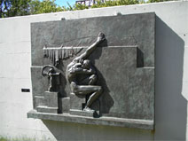

| Skulpturvandring i Reykjavik
På vej hen ad Sudurgata bemærker jeg et hus midt i en have med højt græs og utæmmelige vækster. Fra havens eneste træ lyder der pludselig nogle begejstrede pludrende lyde, afløst af flere prægnante irp irp irp. Jeg kan i første omgang ikke få øje på fuglen, men så gentager den sin sang og afslører sig som en smuk vindrossel, der sikkert netop har stillet sin sult med et par fede orme og nu synger sit velvære ud. Sangdroslen kender man jo hjemmefra, men den noget mindre slægtning er sjældnere set i Danmark. Sangen er måske ikke musikalsk verdensklasse, til gengæld er den usædvanlig smuk i sin brune og vinrøde fjerdragt; de hvide striber på siden af halsen og på øjenbrynene danner en kileformet struktur, der fremhæver de plirrende nysgerrige øjne. Nu har den fået øje på mig: hvad er du for en udenlandsk starut? Jeg har imidlertid ikke nogle charmerende, hvide striber ved øjnene, kun kedelige sorte rande, så den mister hurtigt interessen. Idet den letter, afslører den på vingernes underside en rustrød palet, der hovent lyser ned imod mig. Så er den væk. Senere skal jeg møde mange vindrosler på Island, hvor den er ganske almindeligt forekommende. For resten er det slet ikke fuglekiggeri, der står på dagens program, men derimod et møde med nogle af Reykjaviks mange skulpturer. Mit første stop er en græsplæne i hjørnet mellem Sudurgata og Hringbraut, hvor Einar Jónssons Den Fredløse er gemt bort.
Den fredløse er en legendarisk person, Fjeldejvind, som her bærer sin afdøde hustru fra fjeldet ned til begravelse i indviet jord. Rummelighed, centrifugalkraft, hovedpersonen så at sige indtager rummet, hans bevægelse fremad inddrager én i opstillingen, i blikket er der en fanatisme, som siger: ingen skal knægte mig – er blot nogle af de spontane udsagn, mødet med skulpturen medfører. Den stærke ekspressivitet virker sammen med temavalget suggererende, leder tankerne hen på sagastof men også på en lille plet i Atlanten, som kæmper for selvstændighed, for bevarelsen af en national identitet. Værket blev udstillet på Charlottenborg i 1901 og må betragtes som Jónssons kunstneriske gennembrud. En smule ambivalent med hensyn til, hvad jeg dybest set mener om Jónssons Den Fredløse, beslutter jeg mig for at opsøge kunstnerens andre byskulpturer, inden mødet med de øvrige skulptører, som sætter deres præg på hovedstaden. Der er ikke langt hen til Tjarnargata, hvor Fortryllelsen er brudt er anbragt med front mod søen Tjörnin, og jeg må indrømme, at også min fortryllelse bliver borte ved synet af det bombastiske, symbolmættede værk, som giver mindelser om vor hjemlige Tegners mangel på kunstnerisk mådehold. Så hurtigt videre over Skothúsvegurbroen, et lille slag til højre, ind i Hljómskálagardur Park Her troner den folkekære digter Jónas Hallgrimsson i Jónssons version, som bestemt ikke kan beskyldes for på nogen måde at være kontroversiel, hvilket der imidlertid er en god forklaring på. Der er tale om et bestillingsarbejde fra hovedstadens studenterforening med håndfaste klausuler vedhæftet, forbehold, som ikke tillod subjektive tolkninger af nationalklenodiet. Jónsson var ked af opgaven, men kunne ikke undslå sig. I et brev til vennen V.(?)Briem skriver han: Jeg ser ikke frem til at lave denne skulptur, den vil blive en af disse almindelige mindestatuer, hvor en mand er anbragt på en piedestal, men det er sådan folk i Reykjavik vil have den. Tilbage op langs Tjörnins østside frem til Austurvöllur og endnu et bestillingsarbejde, forestillende Jón Sigurdsson, der kæmpede så bravt for Islands selvstændighed. Det mest bemærkelsesværdige ved statuen er nok relieffet imellem de af søjlebasalt inspirerede strukturer på dens opadstræbende base. Relieffet hedder Pioneren og er naturligvis en tribut til en moderne banebryder, der opererer helt i de gamle landnamsmænd ånd, men samtidig en befriende kontrast til den bundne del af skulpturen. Der er som for Den Fredløses vedkommende en ungdommelig friskhed over relieffet, og efterhånden går det op for mig, at Jónsson nok er bedst, når han arbejder med Islands fortidsstof i en uprætentiøs realistisk ekspressiv stil. Jeg skridter nu videre med retning mod Lækjartorg, undervejs passeres Hannes Hafstein og Christian lX , henholdsvis minister og konge, begge statelige på den om ikke uefne så dog stereotype facon, men min destination er højen Arnarhöll, hvorfra Ingólfur Arnarson skuer ned mod det sted, hvor højsædestøtterne engang drev i land for at angive hans bosættelse. Skulpturen blev i begyndelsen af 1900 tallet bestilt af Islands Håndværkerforening, som imidlertid løb ind i økonomiske vanskeligheder, så der både måtte lotterier og andre foranstaltninger til for at realisere projektet, hvilket skete i 1924. Jónsson er tydeligvis begejstret for sit tema, Arnarson fremstår kraftfuld, stolt, determineret, vokset sammen med højsædestøtterne, den guddommelige vejledning, han er en mændenes mand, en gudernes yndling. Flot er statuen, og den vil sikkert ikke mindst tale til alle dem, der elsker tegneseriens machofigurer og stiliserede magtsymboler som eksempelvis de omtalte støtter; i øvrigt kender jeg mere end én, der ville elske at anlægge freudianske vurderinger af den. Jeg må erkende, at min skulpturvandring bliver mere tidkrævende, end jeg havde kalkuleret med, for endnu mangler museet for Einar Jónsson. Kroppen skal dog lige lades op med et par skiver hangikjöt på flatkökur og en flaske vand, hvilket passende kan ske i skulpturparken bag museet, der ligger over for den statelige Hallgrimskirke.
Efter måltidet vandrer jeg rundt i parken, mange af bronzeskulpturerne minder mig om noget, jeg har set før, og pludselig dæmrer det: Vejen, Niels Hansen Jacobsen. Just præcis. Også hos ham spiller mytologi, folketroens dæmoniske væsner og døden centrale roller. Dertil kommer begges hang til en leg med konfrontationen mellem naturalisme og symbolisme, som får mig til at erindre hellenismens patetiske realisme. Der er klare forbindelsesled imellem de to kunstnere; Stephan Sinding er Hansen Jacobsens gode ven men også Jónssons lærer på Kunstakademiet i København, og Jónsson udstiller hos De frie Billedhuggere, en kunstnersammenslutning, som Hansen Jacobsen var medstifter af. Desuden luftede Jónsson gang på gang sin kongstanke, at en kunstner kunne være en nok så ekvilibristisk hersker over materialet, men hvis han ikke samtidig var digter, opstod der aldrig sublim kunst- Hansen Jacobsen sætter digte til en del af sine værker. Vølven fra 1913, der i øvrigt bekræfter hans interesse for den norrøne kultur, ledsages således af et par vers fra Ældre Edda. Her i parken er det enkelheden i Jord, dramaet i Sorg samt den beherskede maskulinitet i Glima , der fascinerer mig mest. Nøgleordet er netop behersket , i disse værker harmonerer forholdet
 Jord Sorg
Glima
mellem materiale og fortælling, mens i andre af parkens værker fortællingen ganske synes at tage magten fra skulptøren. Inde i selve museumsbygningen bliver dette misforhold desværre endnu tydeligere hos de udstillede gipsfigurer, som udstråler en tung aura af religiøs patos, synes jeg, al kunstnerisk spontanitet viger åbenlyst for en spekulativ søgen. Forklaringen skal søges i Jónssons begejstring for theosofien, som opstår omkring 1910, da han stifter bekendtskab med Swedenborgs skrifter, og skal beskueren trænge ind bag den religiøse symbolik i værkerne, er det nok nødvendigt at kende lidt til nogle af Swedenborgs postulater. Han mente, at sjælen kunne findes ved en minutiøs dissekering af menneskekroppen, at sjælen er en livsenergi, der stammer fra hjernebarken og strømmer rundt med blodet. Han hævdede, at i en tilstand imellem himmel og helvede bliver en nylig afdøds ånd modtaget af engle, som katalyserer ånden ind i en levevis, svarende til den, den havde haft i levende live. Han påberåbte sig at besidde en særlig indsigt i den guddommelige verden, hvor han omgikkes engle og ånder, f.eks. talte han ofte med afdøde venner. Han så sig selv som inkarnationen af Messias. Sammen med en viden om, at også Blake og Strindberg momentant lod sig inspirere af Swedenborg, letter ovenstående udsagn måske tilgangen til Jónssons religiøse værk. Jeg går lidt rundt i bygningen, som Jónsson sammen med arkitekten Einar Erlendsson selv tegnede og indrettede, noget forstemt, stadigvæk ambivalent i mit syn på, hvad jeg har set både uden for i byen og her inden for murene på et hus, der i sin grå, næsten truende kompakthed minder om en utilgængelig klippevæg. Det virker paradoksalt, at Jóhnson var dybt optaget af at hævde kunstens og kunstnerens egenart som bæreelement i al betydelig skaben og afskyede de kollegaer, der mere eller mindre bevidst lod sig binde op på en tilfældig, kanoniseret skole, når han selv utvetydigt dyrker symbolismen, men selv følte han sig som en individualist af Guds nåde og ejede altså en selvopfattelse helt i tråd med Swedenborgs. Hvad skal man mene! På vej ud passerer jeg Ond Samvittighed og bliver optaget af dette ansigt så fuld af overtydelig patos, optaget, ja, for det er brandgodt lavet, men grebet ……. .
Ond samvittighed Med god samvittighed beslutter jeg at udsætte min videre skulpturvandring til næste dag, så de sidste syv timers oplevelser kan fordøjes ordentligt. På et af byens turistkontorer er jeg faldet over en brochure: The City Statues , der henviser til hele 33 skulpturer i byen samt foreslår, at man følger en bestemt rute til beskuelsen. Umiddelbart er det en god ide, men dagens erfaringer fortæller mig, at er man til fordybelse og dvælen, vil et sådant projekt blive alt for overfladisk. Jeg vælger i stedet at være selektiv, fokusere på nogle få kunstnere og i forlængelse af byvandringen supplere med besøg på deres museer. -------------- På herberget har jeg afsløret mit skulpturprojekt, hvilket medfører, at det vrimler med gode råd ved morgenbordet: den og den skal jeg endelig se, men blandt anbefalingerne dukker hele tiden ét bestemt navn op, Nina Sæmundsson. De fortæller, at i 1928 opstilledes i Lækjargata den første skulptur med frit temavalg, titlen var Moderkærlighed og ophavskvinden nævnte kunstner, som tydeligvis er populær hos skyrspiserne omkring mig. Jeg nænner ikke at røbe mit ”møde” med hendes Spirit of Achievement på Hotel Waldorf i New York, eller at jeg allerede i går havde passeret Moderkærlighed, fandt begge værker temmelig uinteressante og så langt foretrak hendes Afrikainspirerede småskulpturer, som jeg tidligere så på en udstilling. At hun blev en prominent kunstner i USA, som gjorde det til sit speciale at male prominente amerikanere, kan heller ikke imponere mig; man kan måske sige, at hvor Einar Jónsson udtrykte et overskud af sjæl, er sjæl en mangelvare hos Nina Sæmundsson. Takkende høfligt for de velmente anvisninger forlader jeg mit logi for ad Kirkjustræti at komme hen til stien langs Tjørnins højre bred, hvor jeg har sat Ólafur Thors stævne. Thors var Islands premierminister flere gange samt medlem af Uafhængighedspartiet, der også bestilte og finansierede Sigurjón Ólafssons statue. Ólafsson lavede den som 60 årig, da han allerede havde en lang karriere bag sig, bl.a. i København, hvor han i trediverne og fyrrerne var bosat og dyrkede kunstens avantgarde. Politisk og kunstnerisk engageret var han en kontroversiel skikkelse i hovedstadens kunstnerkredse men velanskrevet for både sit søgende kunstneriske arbejde og sin aktive deltagelse i modstandsbevægelsen under krigen. Da han i 1945 vender tilbage til Island, ser han det som sin opgave at være med til at introducere den unge stat for Europas nyeste kunststrømninger, derfor er det også med en vis undren, jeg betragter Thors ' næsten komisk selvbevidste fremtoning, stiv og klejn, som han er, men når til den konklusion, at Ólafsson med dette formmæssigt konventionelle værks implicitte ironi vover en tilkendegivelse af sit generelle syn på magtens mænd - det er i hvert fald svært at forestille sig Thors og Ólafsson drikke en bajer sammen. Fra stien krydser jeg Hringbraut for derefter at følge Sudurgata et stykke vej, drejer til højre ad Gudbrandsgata og når frem til Hagatorg. I et vandbassin har Ólafsson her anbragt 5 abstrakte søjler i forskellig højde og med varierede geometriske strukturer. Ifølge titlen, Emblem of Iceland , skal værket opfattes som et sindbillede på landet, men heldigvis er det overladt til beskueren at fortolke dette nærmere, selv opfatter jeg søjlerne som opstående af det fødende element vand, de er det imod himlen stræbende Island, hvor individualitet og fællesskab går hånd i hånd. Man kunne nemt brodere videre ad det spor, men det, der gør denne skulptur til stor kunst, er, at man også kan lade være og blot lade sig gribe af en ren æstetisk nydelse. Nu går turen tilbage via broen over Tjörnin til Frikirkjuvegur 7, Nationalgalleriets adresse, ikke fordi jeg vil indenfor, men for at studere to skulpturer foran museet. Vikingen er den ene. Den forholdsvis lille stenskulptur er en humoristisk hyldest til fortidens kæmper, og stenen synes at have bestemt både form og indhold for Ólafsson, sådan at materialets ”sjæl” gennem spontan, direkte bearbejdning har forplantet sig til vores viking. Den anden hedder Fodboldspilleren . I dag forekommer det uforståeligt, at den vakte furore tilbage i 1936, da bronzeudgaven blev købt af Århus Kunstmuseum, men ikke ret mange havde blik for dens form- og bevægelssesafsøgen, som stiliseringen af krop og ansigt jo netop åbner plads for. Linieføring og proportionsforhold gav nok også anledning til heftig diskussion, men alt det er fortid, nu nydes dens sekundbundne anspændthed af de fleste, hvis vej går forbi.
Fodboldspiller
Jeg ved godt, der står et par værker til af Sigurjón Òlafsson i nærheden, en buste af Reykjaviks borgmester, Gunnar Thoroddsen, samt en skulptur forestillende præsten Fridrik Fridriksson sammen med en lille dreng, og hvis man lige kommer fra Fodboldspiller , kan det måske være interessant, at præsten grundlagde fodboldklubben Valur, men en enkelt bordfælle ved morgenmaden tilskyndede varmt til et besøg på museet for dagens kunstner, så det skal nås inden lukketid. Mobiltelefonen skaffer en taxi til veje, for der er temmelig langt ud til Laugarnestangi 70, hvor museet ligger, i øvrigt fantastisk smukt placeret lige ved vandkanten. Jeg er dårligt kommet indenfor, før endnu en fodboldspiller dukker op, denne gang en målmand ude i fuld længde for at snuppe bolden. Ved siden af står en mand og ser betuttet til. Figuren er i træ, et materiale, som Ólafsson foretrak at arbejde med, da kræfterne blev færre. Værkerne i træ i og uden for museet bærer tydeligt præg af –ligesom Viking - at være intuitive skulpturer, de forhåndenværende træstykker har gennem deres mål, farver og form lagt op til improvisation og ideudklækning. Òlafsson leger med naivisme, kubisme, ren abstraktion, realisme, repeterer et langt livs rejser ind i ismernes mangfoldige universer.
Museet er ikke stort, rummer ikke en overflod af værker, men giver til gengæld et vældig godt indtryk af kunstnerens alsidighed. Her finder man assemblager, glatte bronzefigurer, grove stenskulpturer, fine karakterbuster – bl.a. en af kunstnerens mor, som han i 1938 modtog Eckersbegrprisen for- og ”frihåndsarbejder” med temaer fra den islandske troldeverden.
Sigurjón Ólafssons betydning for Islands kunstverden kan næppe overvurderes. Hans omgang med troldeformularer, myter og sagn, som drivtømmer og øens sten lægger krop til, går hånd i hånd med sofistikeret teknik, og uden at give slip på det særegent nationale kombinerer han dette med internationale strømninger i et vellykket miks, som udmærket kunne kaldes postmodernisme, hvis man føler behov for at etikettere.
Hvad jeg havde regnet med at klare på én dag, har allerede varet to og kræver endnu en, for det er ikke undgået min opmærksomhed, at Jónsson og Ólafsson af Ásmundur Sveinsson fårkvalificeret konkurrence om at fremstå som Islands mest interessante billedhugger. Ganske vist kender jeg kun til fire skulpturer opstillet i byen, men i en lille folder om museet for ham vrimler det med spændende ting, tredjedagen skal altså helliges ham. Da jeg ligger i min seng på herberget, spekulerer jeg lidt over skulpturen som kunstart. Min personlige interesse har rod i den græske billedhuggerkunst, der i mange henseender simpelthen avler kimen til senere tiders skulpturer. Tænk blot på de stærkt stiliserede kykladiske marmor-idoler, som et utal af moderne skulptører i samklang med afrikansk kunst utvivlsomt har ”brugt” –også de islandske-, eller på Polyklets kanon med teorierne om proportionernes perfektion, eller ”den rige stils” ordnede kaos i draperingerne. Stor forskel er der vel heller ikke på den Fidias, der leger med guld og elfenben til sin Athene-statue, og den moderne islandske kunstner, som eksperimenterer med glas og lava, og når det gælder bronzefigurer anvendes stadig den græske cire perdue (tabt voks) teknik. Nå, men alt det har med det formelle at gøre, under mine sonderinger de sidste par dage betød imidlertid den implicit eksistentielle oplevelse mere end beundring af teknisk snilde. For mig er den største kunst den, der nøjes med at givestikord og overlader resten af ordene til beskueren. -------------------------- Da man i 1643 fandt håndskriftet Codex Regius , blev det fejlagtigt tillagt Islands første navngivne digter, historikeren og præsten Sæmundur Sigfússon med tilnavnet Den vise , og naturligt nok døbt Sæmundar Edda. Denne Sæmundur er en af Islands mest legendariske skikkelser, historierne om hans bedrifter er utallige, og de fortælles på de mest kunstfærdige måder, f.eks. har Sveinsson foreviget en af dem med skulpturen Sæmundur på sælens ryg , der kan findes over for Universitetet ved Sæmundargata. Sveinsson gengiver det øjeblik, hvor Sæmundur slår sælen–alias djævelen- i hovedet med ”Davids Salmer”, så den for et øjeblik går til bunds men uden sin passager. Dermed vinder Sæmundur et forudgående væddemål med Satan. Tja, lidt forhistorie er nok nødvendig. Som ung mand tager vor hovedperson til Paris for at studere på universitetet, på Island opfattet som Den Sorte Skole, hvis rektor var djævelen selv. Denne søger at bemægtige sig sin elevs sjæl gennem flere subtile bedrag men bliver hver gang sat mat af den vise Sæmundur; i den aktuelle historie konkurrerer Sæmundur med to unge landsmænd i Paris om at komme først hjem til fødebyen Oddi på Sydisland for at overtage præsteembedet der. ”Jeg vædder på, at du ikke kan bringe mig over havet til Oddi uden at gøre mig våd, taber jeg væddemålet, skal min sjæl være din.” Vi ved, hvordan det går, den vise, unge mand kan betræde embedet i Oddi. Det er denne underholdende legendes mange lag, der fascinerer Sveinsson, tror jeg. Den stammer fra en periode, hvor Island indfører kristendommen og må slå den gamle tro i hovedet med den ny samt demonstrere dennes evne til at overtrumfe Guds evige modstander, men derudover er den i 1926, det år, skulpturen skabes, men også i dag udtryk for det såre menneskelige håb, at intelligens, klogskab er i stand til at overvinde alle onde kræfter i verden. Denne massive, kraftfulde skulptur er en stærk kontrast til en sart, nøgtern buste, forestillende Björg Thorláksson, Islands første kvinde med en doktorgrad; busten er opstillet ved Sturlugata, som man kommer til ved at fortsætte en smule længere ud ad Sæmundargata. Jeg vender endnu engang næsen mod Tjörnin for at beskue Dreng og pige i et lille parkanlæg nær Frikirkjugata. Efter sigende skulle Sveinsson have sagt, at denne demonstration af ung kærlighed burde erstatte Ingólfur Arnarson som Reykjaviks sindbillede. Den er gjort i beton, et blandt mange materialer, Sveinsson eksperimenterede med i sine yngre år, mens de modne års foretrukne skulle blive jern. Solens ansigt fra 1960 viser os et eksempel på en jenskulptur. Foran Menntaskólinn, byen ældste skole, vender den sine luftige, cirkulære former, der kun brydes af en mørk opadstræbende trekantsstruktur mod bygningens vinduer sikkert med besked til alumnerne om at dyrke lyset, åndens verden; jeg fristes næsten til at jævnføre med gamle Platons ”Solbillede”. Der er langt fra bymidten ud til Sigtun, hvor man finder Ásmundursafn, men det er umagen værd at besøge museet, hvis kridhvide udstillingslokale danner en perfekt ramme om Sveinssons værker. De første par skulpturer, jeg støder på, er socialrealistiske udsagn om folk, der bærer tunge ting, sveder ved ambolten, slides ved strygebrættet, velmente og trivielle, men heldigvis dominerer en helt anden, eksperimenterende fantasifuld kunst rummet. Tristan og Isolde Der er tale om sene værker, hvis forkærlighed for metal som materiale er tydelig. Tonen i disse mobileagtige ting virker let humoristisk, dejligt distancerende den tunge alvorsfuldhed hos nogle af ungdomsprodukterne. Hvor vidunderlig frækt at betitle en fjerlet abstraktion Tristan og Isolde ! Med metronomen som centralt element i figuren afsløres den musikalske inspiration, men noget mere dystert tungt end Wagners opera skal man lede længe efter, så mon ikke det er ironien, der her styrer. Jeg chokerer en dame ved siden af mig, da jeg fremhæver skulpturens stærkt erotiske karakter, og det er tydeligt, at hun ikke ønsker nogen uddybning af udsagnet. Ærgerligt nok, for metronomens spids søger da målrettet frem imod revnen i den brudte cirkel, som er udstyret med sarte ”hår”. Set med mine øjne langer Sveinsson ud efter den uægte patos, der prægede senromantikkens opfattelse af kærligheden, og paradoksalt nok fremstår hans ”biologiske” version renfærdig og smuk, renset, som den er, for al udenomssnak. Når jeg betragter det lille mesterværk, er det Anton Veberns korte stykker for orkester, der lyder for det indre øre.
Helt i samme genre er ovenstående. Enkelhed, variationer over materialets tyngde og tykkelse, former i konflikt med hinanden, en stræben i alle retninger og alligevel en harmonisk fryd for øjet samt en udfordring til fantasien. De tomme rum i disse metalskulpturer synes at udgøre selve pointen, de er der, hvor massiv forklaring og afsluttethed tidligere rådede, det er netop fantasiens opgave at finde ud af, hvad det er, hvor ingenting er. Denne sene del af Sveinssons oeuvre kan ikke opfattes som specielt islandsk, den er universel, international, om man vil, men det gør den bestemt ikke ringere. Lokalets øvrige stiliserede skulpturer er –ja, undskyld udtrykket- virkelig skulpturelle, forstået på den måde, at man får meget ud at gå rundt om dem, de lever fra alle sider, og der sker en masse i en cirkulær bevægelse omkring en akse; det virker næsten som om de er drejet op på en drejebænk. Balletdanserinden her er fra alle sider burlesk charmerende i sin engagerede piruet.
En stor have, som præsenterer nogle af Sveinssons monumentalskulpturer omgiver museet deriblandt hans mest beundrede, Dødsridtet . Temaet er dels et alment kendt islandsk folkesagn, dels en kommentar til Anden Verdenskrig. Sagnet stammer fra Snorres Edda og handler om den døde Balders bror, Hermod, der på Sleipner rider til Hel for at hente Balder tilbage til livet. Hele ni dage varer hans ridt til dødsriget. Jo, siger Hel, hvis alle i hele verden begræder Balders død, kan han følge Hermod. Desværre græder jættekvinden Tøk (bag forklædningen Loke) tørre tårer, og den sørgende bror må vende tilbage med uforrrettet sag. Kunstneren fremstillede skulpturen i flere forskellige materialer og formater, men den virker altid med sin krasse ekspressionistiske form stærkt på beskueren. Dødsridtet blev skabt i 1944, og stilen peger tydeligt frem mod den rene abstraktion, som er repræsenteret inden for museets mure.
Dødsridtet
Opløftet og glad forlader jeg den spændende kunstsamling mumlende en gammel kunstkliche, unity in variety, som faktisk forekommer velanbragt, for er det ikke præcis det, han evner at bibringe sit værk, denne islandske billedhugger med internationalt format…… ------------------------
Efter tre dages skulpturvandring i Reykjavik med indlagte museumsbesøg føler jeg mig nu mæt af oplevelser. Undervejs til mine særligt udvalgte kunstnere har det naturligvis været muligt i farten at smugkigge på andre billedhuggerarbejder, når vejen førte forbi. Calder har foran Hallgrimskirken en overbevisende kraftfuld kæmpestatue af Leif den Lykkelige stående, som man heldigvis slet ikke kan undgå at se. Helgi Gislason har begået et par memorialstøtter til ære for nogle af byens honoratiores, hvis ansigter han har placeret midt i en takket søjle; jeg ved ikke, hvorfor de ikke forekommer specielt mindeværdige, men de kan ses ved henholdsvis Kirkjustræti og i Hallargardurinn. Derimod har et meget yngre værk, Mentor , fra 1904 langt større attraktionskraft, og er man ved Halgrimskirkens facade, skal der blot lige slås et smut til venstre hen imod Lonskolinn for at møde den.
Om sin kunst siger Helgi Gislason selv: I mit arbejde søger jeg at plante bevægelse i mine skulpturer, at give dem deres eget uafhængige liv, at bygge på den symbolske og emotionelle forbindelse mellem et menneske og dets værk, idet jeg dog adskiller dette fra virkeligheden, fra normerne.
Denne intention lykkes ganske godt her, hvor den smukke torsos forside strutter af dynamisk selvbevidst, fremadrettet maskulinitet, mens der er ganske hult og statisk fragmenteret bagtil. Læg så til, at en mentor fungerer som rådgiver eller vejleder for unge mennesker, og man kan drage sine konklusioner. I mytologien var Mentor Odysseus' ven og opdrager af sønnen Telemachos, men Gislasons mentor er del af en tid, der ikke ynder endegyldige sandheder, så hvad er forresten mere oplagt end at anbringe skulpturen imellem kirke og skole! Mentor
Et par steder i Reykjavik glimrer Bertel Thorvaldsen, hvis far var islænding, med nogle fine nyklassicistiske statuer forestillende henholdsvis ham selv og Adonis, og således må byens skulpturelle udsmykning med de mange landsfaderskikkelser og allusionerne til fordums storhed siges at være markant præget af stoltheden over den unge nation, men ved siden af de nationalistiske islæt finder man som allerede set små perler, der forholder sig til en moderne virkeligheds eksistentielle problemer, deriblandt også Den ukendte embedsmand. Den af Magritte inspirerede skulptur forestiller en mand, hvis hoved er vokset op i en massiv stenblok, kun underkroppen samt en hånd til at bære mappen går endnu fri. Magnús Tómasson er dens ophavsmand, og man skal lede lidt for at finde den inde i en gård på Lækjargata, hvor den af uransagelige grunde gemmes, men har man blik for det absurde, må den være et must. Og her med synet af materiens tvang kan skulpturvandringen passende stoppe Selv vrider jeg mit hoved fri af blokkene, som har domineret det så intenst, min vindrossel har for længst søgt nye træer, der lyder ingen irp irp irp ned mod mig, mens jeg målrettet søger hen mod den nærmeste beverding, hvor jeg bestiller en øl: ”og den skal absolut ikke være monumental, tak.” Copyright Preben Rasmussen
======================================================================
| |